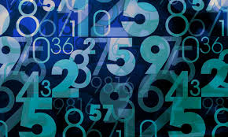

In Nederland kennen wij de cijfers 0 tot en met 9, het tientallig getallenstelsel. Met deze cijfers kunnen wij allerlei verschillende getallen maken, zoals 22, 58 of 1.256.

Naast deze 'gewone' cijfers, bestaat er ook een binair getallenstelsel. Binair betekent 'tweedelig'. Dit is een tweetallig getallenstelsel dat alleen maar bestaat uit de cijfers 0 en 1. Door deze in een bepaalde volgorde te zetten betekenen ze getallen. Het is een soort code die vooral wordt gebruikt bij computers.
Een 0 of een 1 noem je een bit. Je kunt getallen maken door bits achter elkaar te zetten. Hieronder zie je de getallen tot en met 10 in bits:
Waarom is het binair nuttig ? En de toepassing ervan
het computers in staat stelt om gegevens op te slaan en te manipuleren met behulp van een systeem van schakelaars die aan of uit kunnen worden gezet. Deze binaire code kan elk type gegevens weergeven, van tekst en getallen tot afbeeldingen en geluid.
We gebruiken binair in een breed scala aan toepassingen, waaronder computernetwerken, digitale communicatie, encryptie en beeldverwerking. Wanneer u een e-mail verzendt, wordt het bericht opgesplitst in binaire code en verzonden via een netwerk van switches en routers. Op dezelfde manier wordt, wanneer u een foto downloadt, de afbeelding gecodeerd als een reeks binaire cijfers die kunnen worden gedecodeerd en weergegeven op uw scherm.
Een getal omzetten naar binair getal
Er is een handige manier om een getal naar binair om te zetten. Deel het getal steeds weer door 2 en schrijf de rest op. Schrijf die resten van rechts naar links en je hebt het binaire getal.
• Bijvoorbeeld het getal 1000:
1000 / 2 = 500 rest 0
500 / 2 = 250 rest 0
250 / 2 = 125 rest 0
125 / 2 = 62 rest 1
62 / 2 = 31 rest 0
31 / 2 = 15 rest 1
15 / 2 = 7 rest 1
7 / 2 = 3 rest 1
3 / 2 = 1 rest 1
1 / 2 = 0 rest 1
Het binaire getal is 1111101000.
Binaire getallen omzetten naar tekst
Een eenvoudige manier om binaire getallen om te zetten naar tekst is door het volgende stapjes te volgen :
1. Verdeel de code van het binaire getallen in bytes. Elke byte staat voor één teken.
2. Je zet elke byte om naar decimaal. Dat gaat gemakkelijk door elke bit te berekenen. De bit helemaal links is de grootste waarde.